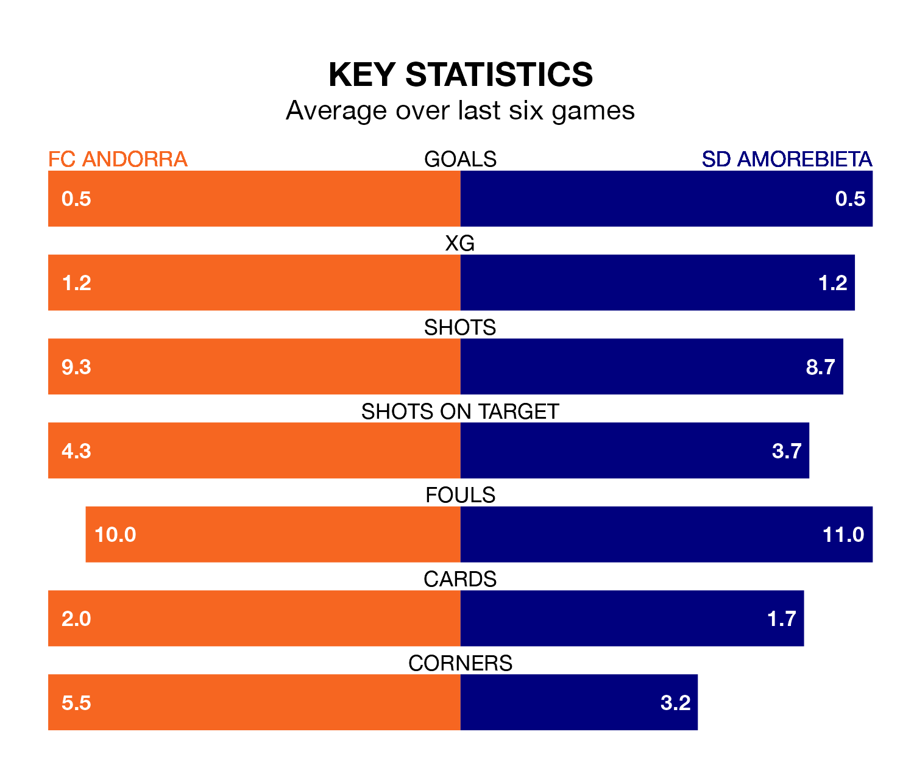

Monday's late match at Estadi Nacional sees the league's two bottom sides face each other, as FC Andorra host rock-bottom SD Amorebieta.
Andorra have picked up 29 points from their first 29 Segunda División games, with seven wins and eight draws.
That is five points more than Amorebieta have collected, having won five and drawn nine.
Andorra are in disappointing form in the Segunda División, with one win and three draws from their last six games.
With two wins and two draws over that period, Amorebieta's form is slightly better – they have taken eight points from 18, compared to the hosts' six.
With 22 goals in 30 games so far this season, the away team are the league's lowest scorers with 0.7 goals per game. And they are conceding more than average, letting in 38 goals at a rate of 1.3 per game.
Andorra are also below average scorers, with 0.8 goals per game, compared to a league average of 1.1. They have conceded 1.3 goals per game.
Andorra's last match was on Wednesday, a 0-0 draw against Levante UD.
Amorebieta lost 1-0 against Leganés last time out, on March 11.
Monday's match will be refereed by Iosu Galech Apezteguía, who has taken charge of 15 Segunda División games so far this season, issuing two red cards and booking 63 players. He has awarded one penalty.
The last Amorebieta game Galech Apezteguía refereed was the 1-0 loss at home against Burgos CF on December 3. He is yet to oversee a match featuring Andorra this season.
Updated: 15:10 (UTC), 15/03/24